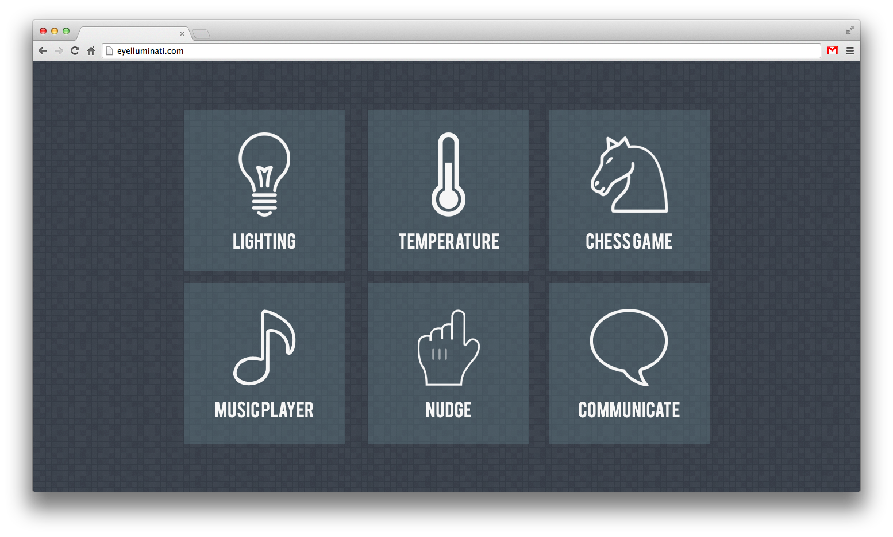
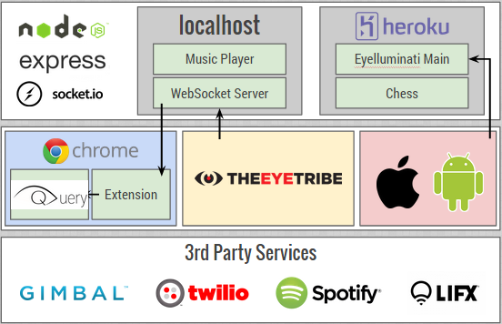

Patients with Locked-In Syndrome are severely limited in the way they can interact with people or machines, by definition. Advances in eye-tracking technology provide a new input device that can be used by LIS patients to better their lives and to reconnect with the world at large. Eyelluminati is a modular platform that allows developers to create applications for LIS patients easily, abstracting away the need to deal with eye coordinates, calibration, etc. by leveraging existing technology stacks.

Eyelluminati consists of 3 core pieces: the WebSocket server which interfaces with the native EyeTribe TCP server, a Chrome Extension which connects to the WebSocket server and provides new JavaScript events that are unique to eye input and a web application with sample modules for an LIS patient to use in their day-to-day life.
We leverage the Chrome Extension to abstract eye input away from the developers of the web application, allowing them to focus on familiar technologies (JavaScript) and provide a means in which the eye tracking input can adapt to LIS patients of different restrictions.
We focus on prototyping and building six modules that enable a LIS patient to reconnect with love ones and their surroundings:

For eye-tracking, we rely on the Eye Tribe device connected to a Microsoft Surface Pro 3. The tablet acts as a gateway to the web applications through the Chrome Browser. The Web Application is built on top of a lightweight node.js/Express server. Contextual awareness is enabled via BT-LE beacon technology in conjunction with iOS devices.